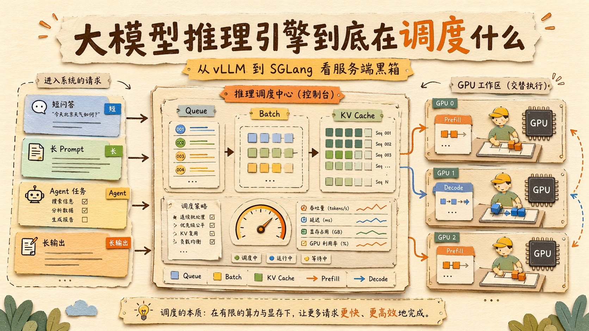
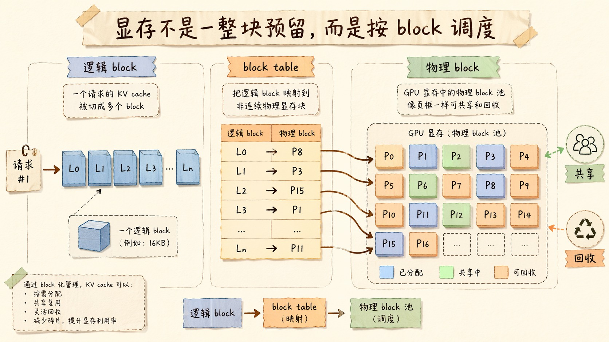
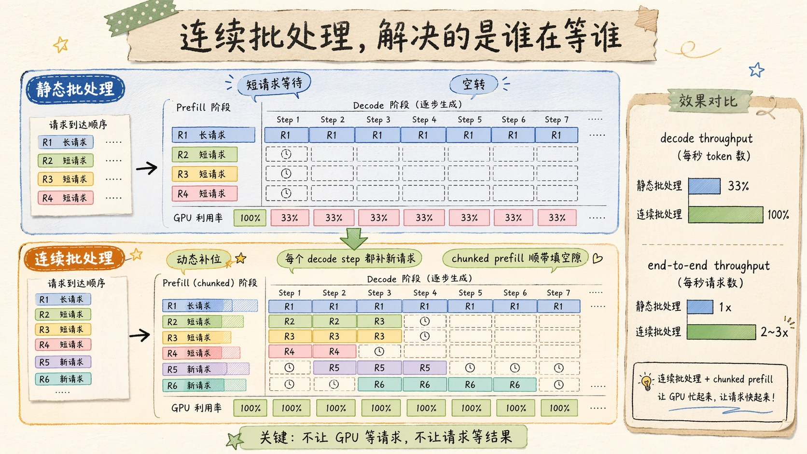
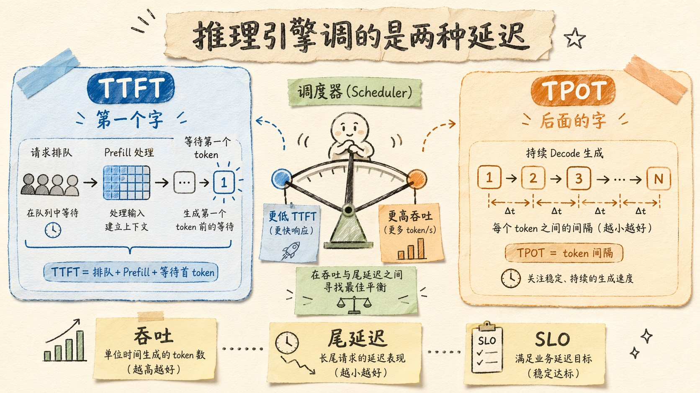
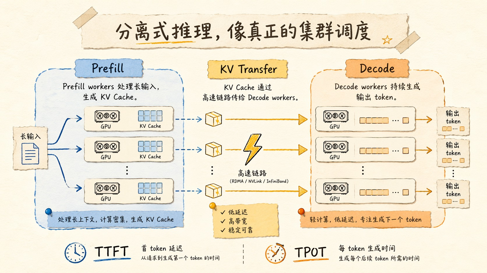

大模型推理引擎到底在调度什么？从 vLLM 到 SGLang 看服务端黑箱
如果你只是在 API 层面用大模型，很容易把这件事想得特别简单。
发请求。
等结果。
结束。
但你只要开始真做线上服务，就会发现这套东西根本不是“发出去、回回来”这么朴素。你看到的只是一个接口，后面其实是一个不停调度请求、抢显存、拆批次、复用缓存、分配 GPU、平衡 TTFT 和 TPOT 的服务系统。
它更像一个小型操作系统。
只是这个操作系统管理的不是文件和进程，而是 token、KV Cache、batch、prefill、decode、以及那些正在排队的人。
所以这个问题比“模型怎么跑”更值得问。
推理引擎到底在调度什么？
答案其实很直接。
它调度的是有限 GPU 资源，和无限变化的请求形态之间的冲突。

一个请求进来以后，不是立刻算
先别急着看引擎名字。
先看请求。
你发一个长 Prompt，它跟一个短问答，不是同一种负载。
你让模型输出 20 个字，和输出 2000 个字，也不是同一种负载。
你前面塞了 10 万 token 的文档，和只塞了一句问题，也不是同一种负载。
但推理引擎在调度时，必须把这些完全不同的请求塞进同一套 GPU 资源池里。
这就麻烦了。
因为 LLM 推理有两个阶段，Prefill 和 Decode，性格还完全相反。
Prefill 需要并行计算，把一大段输入吃进去。
Decode 需要一点一点生成，每次只吐一个 token。
如果引擎把这两类请求粗暴混在一起，就会出现两边都不爽的局面。
Prefill 会把 Decode 挤死。
Decode 又会让 Prefill 的大 batch 打不满。
这也是为什么推理引擎的第一件大事不是“算模型”，而是“分配工作”。
谁先上。
谁后上。
谁跟谁一起上。
谁该等一下。
谁该换 GPU。
这些，才是它真正的日常。
vLLM 把显存问题先解决了一半
推理引擎这条线里，vLLM 的重要性特别高。
它不是第一个做 LLM serving 的系统，但它把一个之前没人真正解决好的问题做明白了，KV Cache 的显存管理。
PagedAttention 的核心思想很像操作系统分页。
不是给每个请求预留一整块连续大内存。
而是把 KV Cache 切成小 block，按需分配，block table 负责映射。
这件事看起来像内存管理的小改良，其实对 serving 很关键。
因为 LLM 请求的长度差异太大了。
如果你按最大长度去预留，浪费会非常夸张。PagedAttention 让这些 cache block 像页一样可共享、可回收、可复制写。它的论文直接说了，这种方式能把以前那种碎片和冗余预留压下去，吞吐提升 2 到 4 倍。
这一步很重要。
因为它把“显存不够”从一个粗暴的硬件问题，变成了可以调度的资源问题。
一旦你能按 block 管显存，后面很多事都能谈。
连续批处理。
前缀复用。
分支共享。
并发控制。
甚至分离式推理。
vLLM 不是把模型跑快了一点。
它是把“显存怎么分”这件事工程化了。

连续批处理，解决的是“谁在等谁”
如果只做静态 batching，推理系统很容易被一个长请求拖死。
你凑一批一起算。
谁先来谁后到不重要。
重要的是等齐以后一起上。
这对图像分类、短文本 batch 也许还行，但对 LLM serving 非常不友好。因为 LLM 每个请求的长度和生成速度差异极大，静态 batch 往往会让短请求白白等长请求。
于是连续批处理就成了主流。
它的核心意思很朴素。
不是等整批结束再换人，而是每一轮 decode step 结束后，把做完的请求踢出去，把新来的请求补进来。
这样 GPU 能持续被喂着跑。
请求也不用傻等。
SARATHI 这类工作把这个思路推得更明显，它通过 chunked-prefills 和 decode-maximal batching，让 prefill 的 chunk 去“顺带”填充 decode 的空隙，提升 decode throughput。论文里给出的结果很直接，decode throughput 和端到端 throughput 都能明显提升。
这背后其实是一种很工程的理解。
GPU 的空闲不是“自然现象”。
它是调度没做对。
只要请求形态足够杂，调度策略就决定了你是把 GPU 喂饱，还是把它晾着。
而推理引擎的工作，就是尽量少让后者发生。

Prompt Cache 和 RadixAttention，解决的是“有没有重复干活”
很多 LLM 应用其实并不是每次都在从零开始。
System Prompt 一样。
工具定义一样。
模板一样。
RAG 的某些检索块一样。
多轮对话里，前面那一大坨背景也常常一样。
如果每次都重新 prefill 一遍，那就是赤裸裸的重复劳动。
所以推理引擎的另一个核心任务，是识别能不能复用。
vLLM 有 prefix caching。
SGLang 有 RadixAttention。
两者的思路都在于把重复前缀的 KV cache 留住，下次命中就直接复用，不必重新算一遍。
SGLang 的论文把这个讲得很明确，系统专门针对 structured generation、multi-turn chat、RAG、JSON decoding 这些复杂程序做优化，RadixAttention 就是让 KV reuse 变得系统化的关键组件之一。它在这些任务上可以把吞吐拉得很高。
这里真正值得注意的，不只是“省了一次 prefill”。
而是推理引擎开始把“重复内容”看成一等公民。
以前你可能觉得缓存只是个性能小优化。
现在不一样了。
缓存已经是 serving 架构的一部分。
谁复用得好，谁就更省钱。
谁前缀稳定，谁就更快。
谁的工作流更结构化，谁就更吃得到系统红利。
这也是为什么 Agent、RAG、代码助手一类场景，会特别吃推理引擎的红利。
因为它们天生会把相同前缀反复打进来。
这不是偶然。
这是工作负载的形状决定的。
推理引擎其实在调的是两种延迟
调度器最在乎的不是单次平均耗时，而是两种延迟。
TTFT。
TPOT。
前者决定用户多久能看到第一个字，后者决定后面每个 token 的速度。
这两个东西在 serving 里经常是互相打架的。
你为了更低 TTFT，可能得减少排队，让请求更快进去。
你为了更高吞吐，可能得把 batch 塞得更满。
但 batch 太满，TTFT 又容易上去。
这就是为什么现代推理引擎的调度并不是单纯追求最大吞吐，而是在吞吐和 tail latency 之间找一个可控点。
DistServe 这篇论文把这个矛盾说得很直接。它指出，prefill 和 decode 的资源画像不一样，如果混在一起，就会互相干扰。它提出把 prefill 和 decode 分离部署到不同 GPU 上，并根据 TTFT 和 TPOT 约束去共同优化资源分配和并行策略。论文里给出的结果很猛，在约束条件下能显著提高可服务请求量，或者在同等吞吐下把 SLO 压得更紧。
这其实就是推理引擎调度的本质。
不是让 GPU 一直忙。
而是让 GPU 忙得有意义。
忙在正确的阶段。
忙在正确的请求上。
忙在正确的资源池里。
这件事听上去很普通，但它直接决定线上体验。

分离式推理，开始像真正的集群调度了
如果把问题再往前推一步，就会发现“一个 GPU 跑一个请求”这套思路，迟早会撞到天花板。
因为 Prefill 和 Decode 的硬件需求真的不一样。
Prefill 更像算力密集型。
Decode 更像带宽密集型。
把它们硬塞在一个池子里，最后往往是谁都没吃满。
所以分离式推理开始变得合理。
Prefill GPU 专门负责把输入吃进去，写好 KV Cache。
Decode GPU 专门负责后续 token 的生成。
中间用高速互连把 KV Cache 传过去。
这就是 DistServe 的主张。它说到底是在说，LLM serving 不应该只按“模型”分资源，而应该按“阶段”分资源。
这件事很像数据库和流系统里的分层设计。
不是把所有活都压在一个 worker 上。
而是按工作特征拆开，分别做最合适的资源调度。
推理引擎越往后走，越像一个真正的集群调度系统。
它不是“模型盒子”。
它是“模型工作流的操作系统”。
SGLang 做的，是让结构化程序更像程序
如果 vLLM 的重点是 memory management，那 SGLang 的重点就更偏 structured generation。
它的出发点不是“怎么把一个请求跑得更快”，而是“怎么让复杂的语言模型程序可表达、可复用、可优化”。
SGLang 的论文里，前端负责控制流、选择、并行，后端负责用 RadixAttention、compressed FSM、speculative execution 这些东西提速。它在 agent control、logical reasoning、few-shot、JSON decoding、RAG pipelines、多轮 chat 上都给出了很强的吞吐表现。
这点其实很重要。
因为很多人把 LLM 应用写成了一堆 prompt 拼接。
但真正成熟的推理引擎，已经开始把这些结构看成程序了。
程序就应该有缓存。
程序就应该有状态。
程序就应该有控制流。
程序就应该有分支复用。
这就是 SGLang 这类系统的方向感。
不是单次生成，而是生成程序化。
不是临时拼 prompt，而是把 prompt 结构本身系统化。

现在的 serving 优化，已经不止是一个引擎的问题
如果把这几年所有工作放在一起看，你会发现一个趋势特别明显。
最早，大家在解决的是“模型怎么跑”。
后来，大家在解决的是“KV Cache 怎么放”。
再后来，大家开始解决“请求怎么排队、怎么批、怎么复用、怎么拆阶段”。
到现在，问题已经演化成“整个 serving 集群怎么围着工作负载做控制”。
PagedAttention 解决的是内存管理。
continuous batching 解决的是吞吐和队列。
prefix caching / RadixAttention 解决的是复用。
DistServe 解决的是阶段冲突。
SARATHI 解决的是 chunked prefill 和 decode 的互相占位。
SGLang 解决的是结构化生成程序的执行。
这些东西合在一起，才是现在推理引擎的真实面貌。
它不是一个模型 runtime。
它是一整套为 LLM 工作负载量身定制的调度系统。
做应用的人该看什么
如果你不是做底层引擎，而是在做上层应用，很多时候你不需要知道每一行 CUDA 怎么写。
但你至少要知道几个很现实的判断。
第一，固定前缀能不能稳定。
如果可以，缓存收益会非常大。
第二，输入和输出的长度分布是什么。
如果输入特别长，那你会特别吃 prefill 优化。
如果输出特别长，那你会特别吃 decode 吞吐和 speculative decoding。
第三，你的工作负载是不是结构化。
如果你的应用总是 JSON、工具调用、模板输出，那 SGLang 这类 structured generation 系统会特别合适。
第四，你是不是有多轮共用上下文。
如果是，那 prefix caching、RadixAttention、段级复用就会变得很重要。
第五，你是不是在跟 SLO 打架。
如果你的 TTFT 卡死了，就别先纠结总吞吐。
如果你的 TPOT 卡死了，就别只盯首字延迟。
这些判断，比你盲目换“更大模型”更重要。
写在最后
推理引擎这个词，听上去像一个单独的技术组件。
但真到了线上，它其实是整个系统的神经中枢。
它调度请求。
它调度显存。
它调度缓存。
它调度 batch。
它调度每一次 prefill 和每一次 decode。
你看到的是一次回答。
它看到的是一个不断变化的工作负载图。
这也是为什么做 LLM 应用的人，迟早都会碰到 serving 这层。
你不碰它，它也会来碰你。
因为当你的应用开始变大，最先告诉你“你得懂一点底层”的，从来不是模型，而是成本和延迟。
大模型不是只要更聪明。
还要更会被调度。
能把它调度明白的人，才真正理解了它怎么活在生产环境里。
以上，既然看到这里了，如果觉得不错，随手点个赞、在看、转发三连吧，如果想第一时间收到推送，也可以给我个星标⭐~
谢谢你看我的文章，我们，下次再见。
/ 参考资料
Efficient Memory Management for Large Language Model Serving with PagedAttention, 2023
SGLang: Efficient Execution of Structured Language Model Programs, 2023
SARATHI: Efficient LLM Inference by Piggybacking Decodes with Chunked Prefills, 2023
DistServe: Disaggregating Prefill and Decoding for Goodput-optimized Large Language Model Serving, 2024
Large-Scale LLM Inference with Heterogeneous Workloads: Prefill-Decode Contention and Asymptotically Optimal Control, 2026